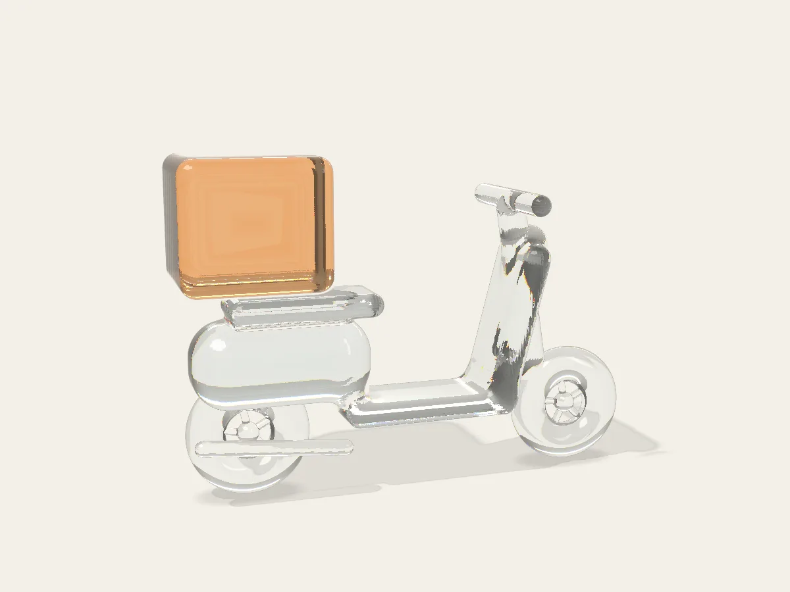

Concrete swallows the signal in seconds. The map freezes, the order won't load, and your download starts again from zero.

03 / 08Who it's for
Built for delivery riders first.
Riders go underground dozens of times a day. SANKET began as our answer to PRAYAS problem COMP-26-S-020 at Terna Engineering College, guided by our mentor, Dr. Rohini Palve. It helps anyone with a lift and a deadline.
It reads your signal every second. On this simulated ride down a basement ramp, it warned 16 seconds before the signal died. A simple low-signal alarm managed 2.
16 s
of warning on this ride
80%
of orders saved in our tests, against 46% for a simple alarm
On a computer? Scan to open this page on your phone.
Scroll
Questions
Before you install
Is SANKET free?
Yes. No ads, no account, nothing to buy.
Which phones does it work on?
Android 10 and newer. There's no iPhone version yet.
Why does Chrome say the file might be harmful?
Chrome says this about every app downloaded outside the Play Store, and SANKET isn't on the Play Store yet. Tap Download anyway, then allow installs from Chrome when Android asks.
Android says "There was a problem parsing the package".
Delete the SANKET files in your Downloads, restart the phone, and download again. The file is 267 KB (some apps show 274 kB); any other size means the download broke.
My phone has no barometer. Will it notice lifts?
Yes. It feels a lift start and stop through the motion sensor, which every phone has: you are lighter for a moment going down, and heavier going up.
Will it eat my mobile data?
It only downloads what you ask for. Downloads of 100 MB or more wait for Wi-Fi unless you tap Use mobile data.
Does it drain the battery?
It reads the signal once a second, only while protection is on. In Battery Saver or below 15%, it turns off GPS and checks nearby towers less often.
Does it work on Jio's 5G?
Yes, as an early version. On 2G and 3G it still protects your downloads, but it can't warn early.
What does it need permission for?
Location, because Android shows nearby towers only with it. Phone, to read both SIM cards; it never makes or reads calls. Notifications, for the warning.
Has it been tested in real buildings?
Not yet. The warning was built and tested with 52 hours of real 4G recordings and 1,500 simulated trips, and the app on an Android emulator and a phone. Tests in real basements and lifts are next.
Can delivery apps use it?
That's where it's going. The warning is a small piece of code that can run inside a delivery partner app. Across a whole fleet, the places where riders lose signal can be shared: in our study's simulated fleet, that got 95% of basement entries warned at least 10 seconds ahead within a week.